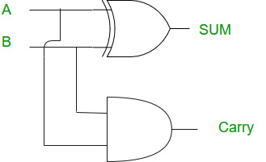

Half Adders
A half adder is a type of adder, an electronic circuit that performs the addition of two binary digits. The half adder produces a sum and a carry value, which are both binary digits. The half adder has two inputs, usually labeled A and B, and two outputs, the sum (S) and the carry (C).
A single half-adder adds 1 bit to another
| Input A | Input B | Sum (S) | Carry (C) |
|---|---|---|---|
| 0 | 0 | 0 | 0 |
| 0 | 1 | 1 | 0 |
| 1 | 0 | 1 | 0 |
| 1 | 1 | 0 | 1 |
The logic equations for the half adder are:
- Sum (S) = A XOR B
- Carry (C) = A AND B
This doesn't do regular binary addition! It can't use the carry bit it produces as it only adds 2 bits!
looks like this:
Sum: 0
Carry: 0
Adders
An adder is a digital circuit that performs addition of numbers. In many computers and other kinds of processors, adders are used in the arithmetic logic units or ALUs. They are also used in other parts of the processor, where they are used to calculate addresses, table indices, and similar operations.
The image in the top right of notes is of a full-adder, you can draw the missing parts of the one in your full-adder notes if you like
These do regular binary addition as they use 2 half-adders to consider the carry bit into the addition
Concatenating 4 of these adders together, linking the carry bit out of one adder into the input carry bits of another adder, as they each take 3 bits input and output 2, would allow the addition of 4 bits in binary
Truth table looks like:
| Input A | Input B | Carry In | Sum (S) | Carry Out (C) |
|---|---|---|---|---|
| 0 | 0 | 0 | 0 | 0 |
| 0 | 0 | 1 | 1 | 0 |
| 0 | 1 | 0 | 1 | 0 |
| 0 | 1 | 1 | 0 | 1 |
| 1 | 0 | 0 | 1 | 0 |
| 1 | 0 | 1 | 0 | 1 |
| 1 | 1 | 0 | 0 | 1 |
| 1 | 1 | 1 | 1 | 1 |
The logic equations for the full adder are:
- Sum (S) = A XOR B XOR Carry In
- Carry Out (C) = (A AND B) OR (Carry In AND (A XOR B))
looks like this:
D-type Edge Rising Flip-Flops
Output Q and NOT Q, inputs D and Clock Signal
A D-type flip-flop, also known as a data or delay flip-flop, is a type of flip-flop that captures the value of the D-input at a definite portion of the clock cycle (such as the rising edge of the clock). The captured value becomes the Q output. D-type flip-flops are widely used in digital electronics for storing state information.
The characteristic equation for a D-type flip-flop is:
- Q(next) = D
Basically, whatever state D is when the Clock is rising (look at pg 29 and 30 for graphs of D and Clock), is the state of Q until the next clock rise
Q: 0